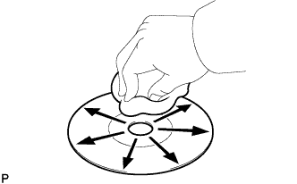
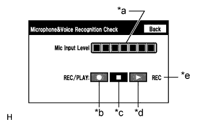

СИСТЕМА НАВИГАЦИИ (для моделей с DVD) > Затруднения при распознавании голоса |
| 1.ПРОВЕРЬТЕ СОСТОЯНИЕ |
Проверьте, не является ли уровень распознавания голоса в системе низким для определенного голоса.
|
| ||||
| OK | |
| 2.ПРОВЕРЬТЕ ДИСК С КАРТОЙ |
 |
Убедитесь в том, что диск с картами не деформирован и не треснут.
|
| ||||
| OK | |
| 3.ПРОВЕРЬТЕ ДИСК С КАРТОЙ |
|  |
Проверьте отсутствие загрязнений на поверхности диска.
|
| ||||
| OK | |
| 4.ПРОВЕРЬТЕ МИКРОФОН (ПРОВЕРКА РАБОТЫ) |
|  |
Войдите в режим "Microphone & Voice Recognition Check" (проверка микрофона и распознавания голоса) (Нажмите здесь).
Говоря в микрофон, убедитесь в том, что индикатор входного уровня микрофона изменяется в соответствии с поступающим голосом.
Нажмите на переключатель записи и запишите голосовую информацию.
Убедитесь в том, что индикатор записи остается включенным во время записи, и записанный голос воспроизводится нормально, без шумов и искажений.
| *a | Индикатор входного уровня микрофона |
| *b | Переключатель "запись" |
| *c | Переключатель "стоп" |
| *d | Переключатель "воспроизведение" |
| *e | Индикатор записи |
|
| ||||
| OK | ||
| ||